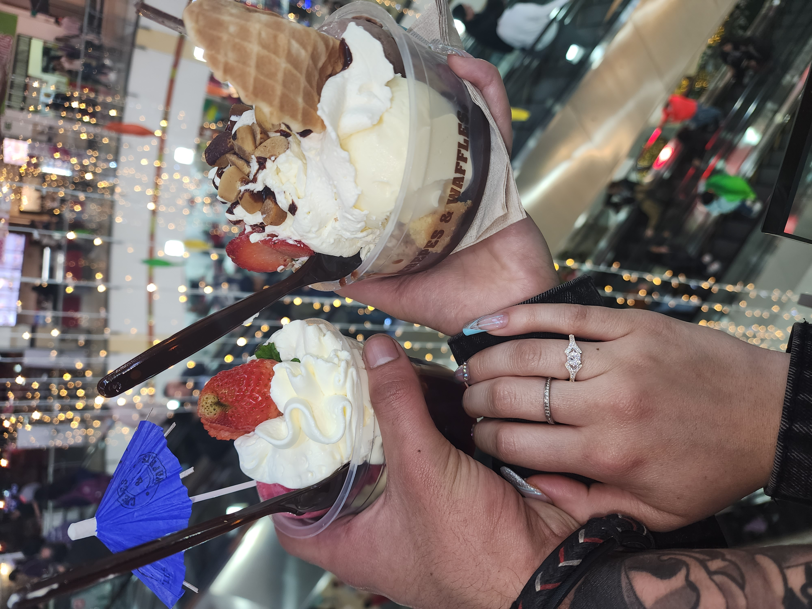

Hola, hoy es un dia que significa mucho para mi, por eso he preparado un pequeño recorrido para ti 쮻eseas Acompañarme?
Gracias por aceptar
De ante mano quiero ser sincero y directo, y la razon de esto es por que quiero hacer mi ultimo intento
쯊e animas a ver lo que tengo por decir?
Me alegra mucho que te animaras!!
Todo lo que he plasmado aca, es el reflejo sincero de lo que mi ser anhela, de lo que mi corazon habla, y de lo que mi mente piensa
Sin mas preambulos, 쮼mpezamos?
Si me lo permites, sere un poco egoista, y expresare muchas cosas que tal vez ya muchas te las he dicho, quizas otras tantas no
Eres mi mayor tesoro y de verdad, anhelo con toda mi alma volver a estar contigo
Tienes una forma de hacer que lo ordinario se vuelva mágico, y tu simple sonrisa puede iluminar mi día más gris.
Eres la melodía que da ritmo a mi vida, una canción de amor y esperanza que resuena en cada rincón de mi corazón.
Tu risa es el sonido más hermoso que jamás he escuchado, es la música que deseo escuchar por siempre.
Eres como un sueño hecho realidad, una prueba de que las maravillas existen en este mundo, y estoy eternamente agradecido por eso
En ti, he encontrado no solo el amor, sino también la inspiración, la alegría y la verdadera belleza que emana de tu ser.
Cada detalle de ti, desde tu sonrisa hasta tu forma de ver la vida, me hace caer más y más enamorado de ti.
Eres mi faro en la tormenta, la calma en mi caos, y la razón por la que miro hacia el futuro con esperanza.
En este mundo lleno de incertidumbres, tu amor es la única verdad en la que encuentro consuelo y seguridad.
Eres como una obra maestra en una galería, destacando entre todas, capturando mi atención y mi corazón completamente.
Me he dado cuenta de que lo mejor de mi pasado eres tú
쯇ero sabes algo?, te extraño demasiado
Recuerdo cada risa que compartimos y cómo cada una me hacía sentir más cerca de ti. Quisiera crear más momentos felices contigo.
Aprendí tanto de nosotros, cada recuerdo es una lección que me acerca más a la persona que quiero ser para ti.
Extraño la forma en que nos entendíamos sin necesidad de palabras, Extraño tus besos, Extraño tus caricias, Te extraño a ti
He guardado todos los buenos momentos en mi corazón, esperando la oportunidad de revivirlos contigo.
Cada lugar que visitamos juntos tiene un significado especial para mí. Sueño con volver a esos lugares, otra vez de tu mano.
Aunque nuestro camino se separó, nunca dejé de pensar en ti y en lo que podríamos haber sido.
He reflexionado sobre nuestro tiempo juntos y me he dado cuenta de cuánto significas para mí
Recuerdo cada pequeña cosa que me hacías sentir. Extraño eso más de lo que las palabras pueden expresar.
Nuestra historia no ha salido de mi mente. 쯇odríamos agregarle unos cuantos capítulos más?

Cada canción que escuchamos juntos, cada película que vimos, aún las recuerdo y me hacen desear volver a esos momentos
Recuerdo la suavidad de tu mano en la mía, una sensación que siempre me daba paz.
Sigo siendo tuyo como desde el primer dia que me entregue a ti en cuerpo y alma
Se que no puedo devolver el tiempo, para evitar que aquellas cosas que formaban un vinculo entre nosotros no desaparezcan, pero simepre las mantengo vivas en mis recuerdos
Disfrutar contigo todas las celebraciones y nuestra fecha especial
Me he arrepentido todos los dias, por haberte perdido a ti y a tu familia
Y... aunque deberia olvidar, de mi mente no puedo sacarte, y como hacerlo? cuando el dia que me dijiste que si fue de los mas felices de mi vida
No sabes cuanto anhelo tener de vuelta tus besos...
Tus abrazos....
Tu cuerpo...
Tu cariño...
Tu compañia...
Hacer cosas juntos...
Esos momentos que nos unian mas
Te extraño en mi vida
Se que ahora solo soy una opcion mas en una lista para ti
Y comprendo....
Se que tengo cosas muy malas, se que me volvi celoso, se que me volvi posesivo, se que mi estabilidad mental se fue al caño,
se que debido a mis acciones lo perdi todo de ti
Probablemente ya estas con alguien mas, ya les as entregado a esa otra persona todo aquello que yo tenia, y puede que te haga mas feliz de lo que yo puedo hacerlo, te haga sentir mas especial,
te haga sentir mas querida y mas segura y con mas pasion, y sin aun no te brinda eso, cualquier otra persona tambien estaria encantado de hacerlo
Y esta bien... Es tu derecho, y no puedo negar que muero de celos, pero me importa mas tu felicidad
Pero aun tengo la esperanza que nuestro vinculo aun no esta roto
Y por esa esperanza, es que quiero insistirte nuevamente.
Y te pido disculpas, por que te habia dicho que me habia resignado, pero aun tengo fuerzas para luchar por ti, y no me quiero rendir
Asi que permiteme, intentar convencerte de que podemos volver a intentarlo, se que hay muchos peros, muchas contras para ti...
Pero sabes...
Nunca habia estado tan convencido de algo, como lo estoy de que puedo arreglarlo
Si tu mama me odia... Te juro que are lo imposible para recuperarla
Si te lastime... Te juro que enmendare cada segundo, cada momento de dolor, cada lagrima que te hice derramar
Si me odias... Luchare dia por dia para que me vuelvas a querer
Te preocupa que piense a futuro... Disfrutare solo del hoy y me enfocare en el dia a dia contigo
Te preocupa salir lastimada... Are hasta lo imposible para que esto no sea asi
Ya no te gusto... Te volvere a conquistar
No quieres tener hijos... Ya tampoco quiero tener hijos
Te fastidian mis celos... Trabajare en tener una mente mas abierta, y confiar plenamente en ti
Si ya me olvidaste... Empecemos de cero
Tienes miedo de que todo lo malo se repita... Lo entiendo, te juro que desvanecere ese miedo poco a poco
Crees que ya nada sera igual... Es comprensible, pero somos humanos y estamos en constante cambio, y no te puedo asegurar que las cosas seran iguales, por que aprendi, y me efocare en que sean mejores
No hay nada en este mundo que me impida hacer lo que sea por ti, ni la tristeza ni el dolor eclipsan lo que siento por ti.
Si esto no es suficiente para ti, tengo 50 razones mas por la cuales puedo convenir para tu vida
Quisiera decirte mas palabras, pero ya no quiero agobiarte mas, emos llegado al final del recorrido
Te agradezco mucho por llegar hasta aca, asi que solo me queda una cosa mas por decirte
Desde lo Profundo de Mi Corazón
Al recorrer este camino de recuerdos y emociones, cada palabra, cada imagen y cada momento compartido aquí es un reflejo de lo profundo que eres para mí y de lo mucho que te valoro. A través de esta pequeña ventana hacia mi corazón, espero haberte mostrado no solo lo que hemos sido, sino también lo que aún podríamos ser.
Entiendo que el pasado no puede cambiarse y que el futuro es un libro aún por escribir. Sin embargo, creo firmemente en el poder de un nuevo comienzo, en la posibilidad de aprender de mis errores y en la esperanza de volver a estar juntos. Si estás dispuesta a abrir ese libro conmigo, a escribir nuevas páginas llenas de aprendizajes, amor y risas, y a explorar el donde ambos podamos ser nuestra mejor versión, entonces mi corazón estará abierto a ti, con la misma sinceridad y amor que siempre ha tenido.
쯏 si lo intentamos otra vez?
Después de este viaje por los recuerdos que hemos creado juntos, me encuentro ante ti con una pregunta nacida del amor y la esperanza 쮿ay una posibilidad en tu corazón de reconstruir y renovar nuestra historia, de una continuación o de un nuevo comienzo? La desición que tomes la respetare esta vez, sea cual sea, pues lo que más valoro es tu felicidad.
Tu valentía al abrir tu corazón a un nuevo intento es un regalo que atesoraré. Con cada paso hacia adelante, prometo poner todo de mí en esta oportunidad que me brindas...
Si estas segura de esta respuesta, quiero que sepas, que no tengo condiciones, ni exigencias, que sea como tu lo quieras
No olvides enviarme tu respuesta
👉👈
Respeto profundamente tu decisión y agradezco tu honestidad. Siempre valoraré los momentos que compartimos y lo que hemos aprendido el uno del otro. Te deseo todo lo mejor en tu camino, y espero que encuentres la felicidad y la paz que mereces.
Aun asi, si cambias de de opinion, siempre estare disponible para ti, y estare esperando por ti, y asi no suceda, que sepas que mantengo mi palabra de estar para ti cuando me necesites no importa lo que sea, estoy al alcance de un click
No olvides enviarme tu respuesta
👉👈
Me alivia y me llena de esperanza que estés dispuesta hablar conmigo. Estoy aquí para escuchar, para responder cualquier pregunta, para entender mejor tus sentimientos y necesidades.
Estare esperando por el momento en que decidas hablar conmigo, independientemente del resultado, valoro inmensamente el que lo hayases contemplado


.jpg)